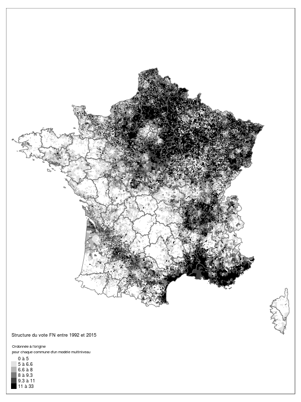
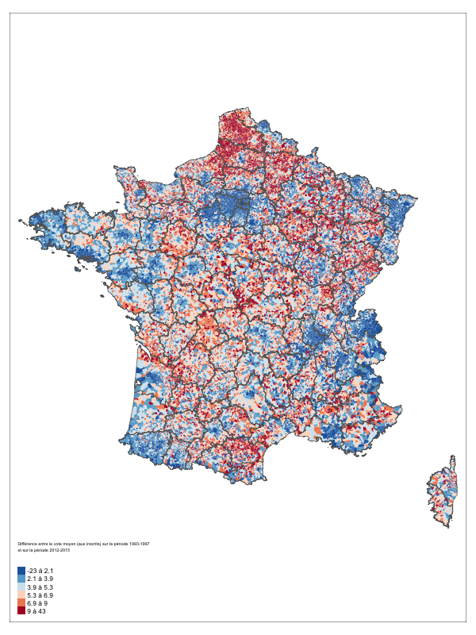
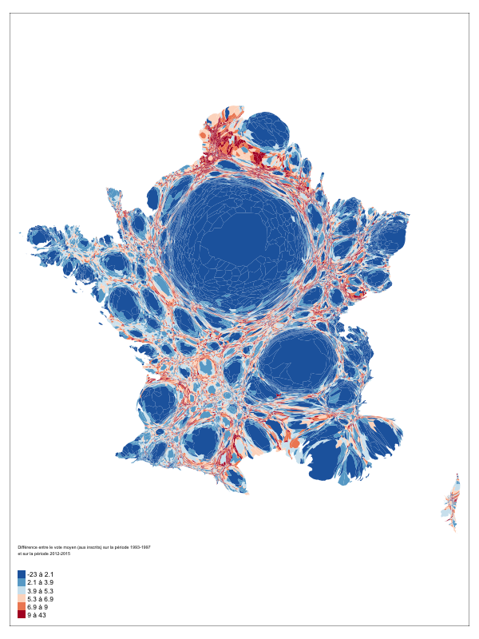
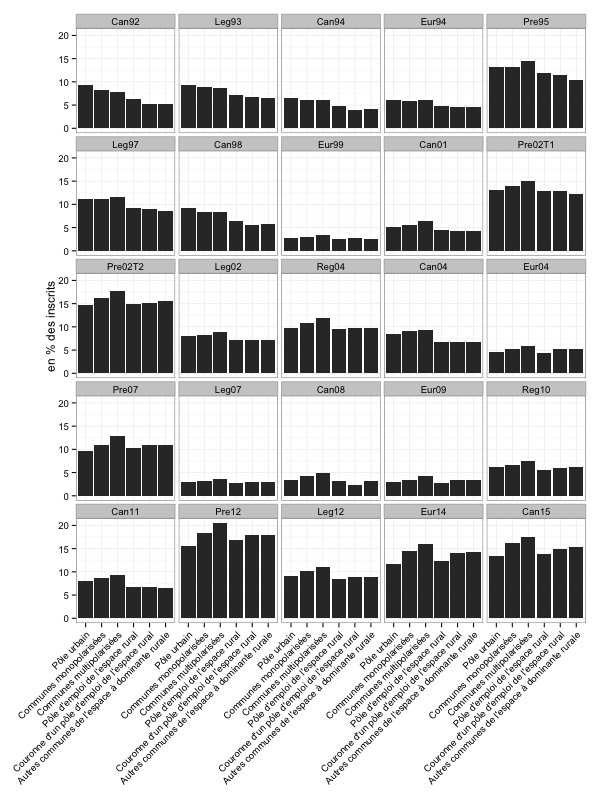
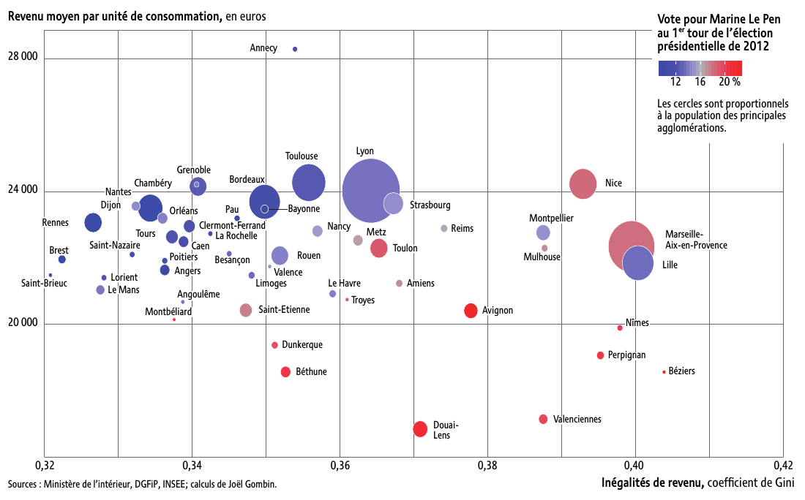
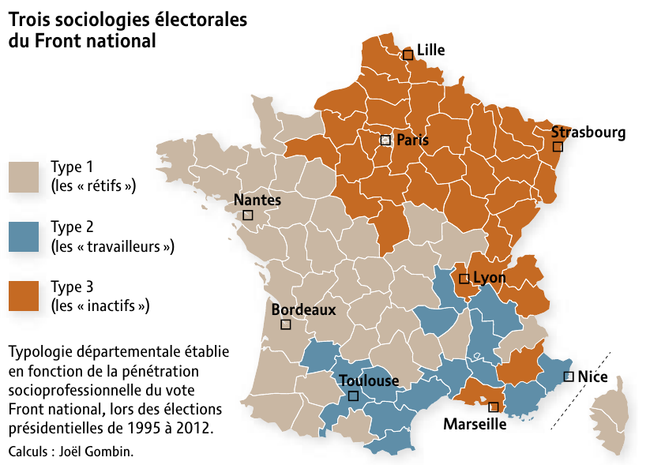
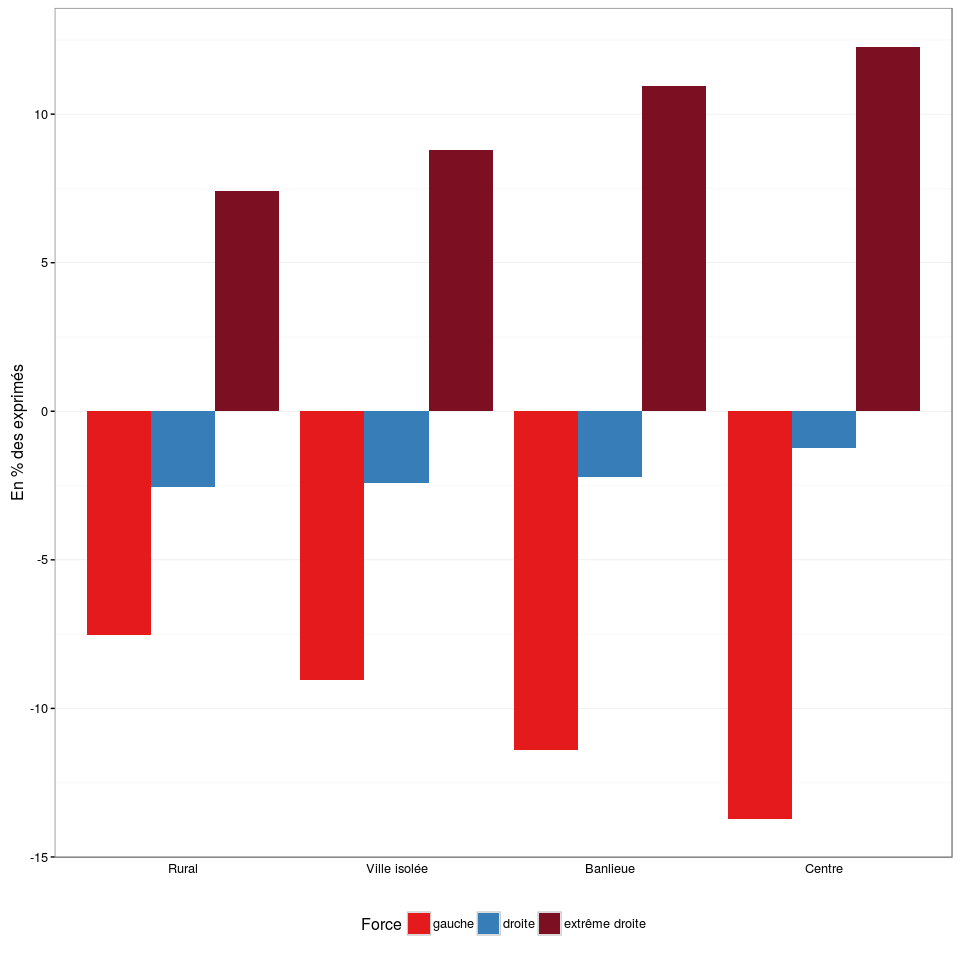
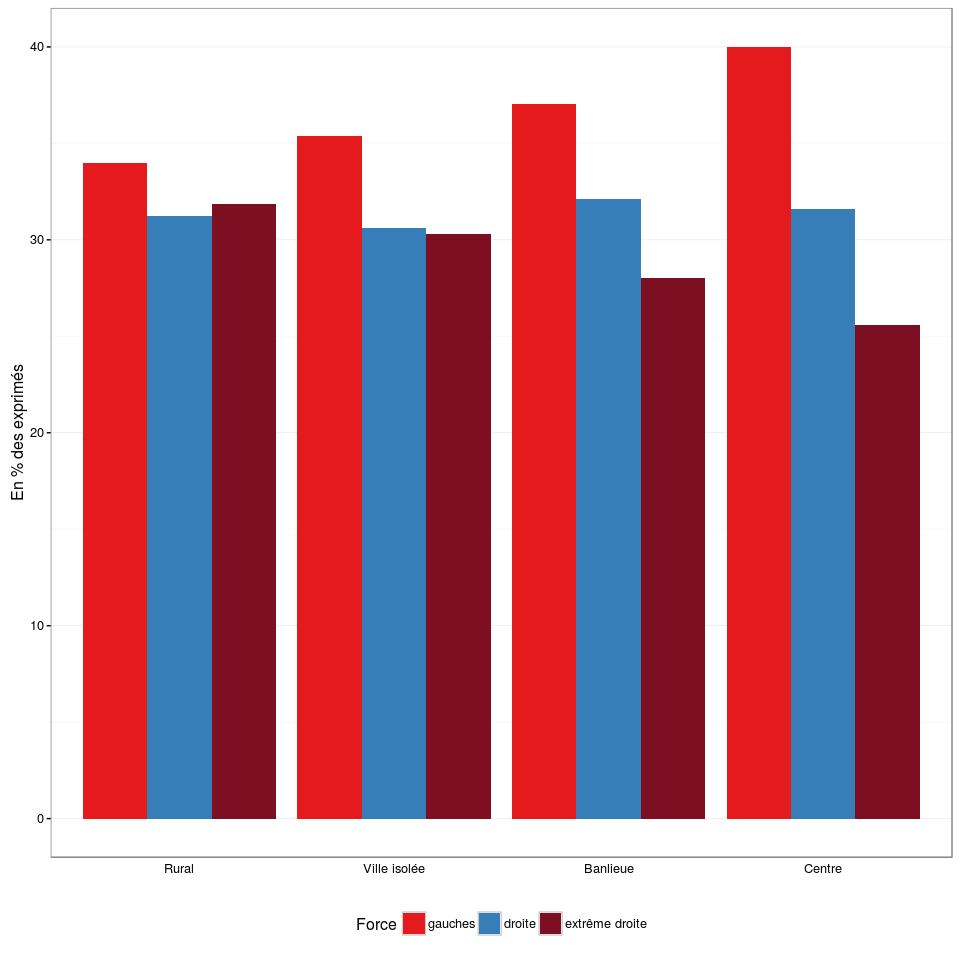
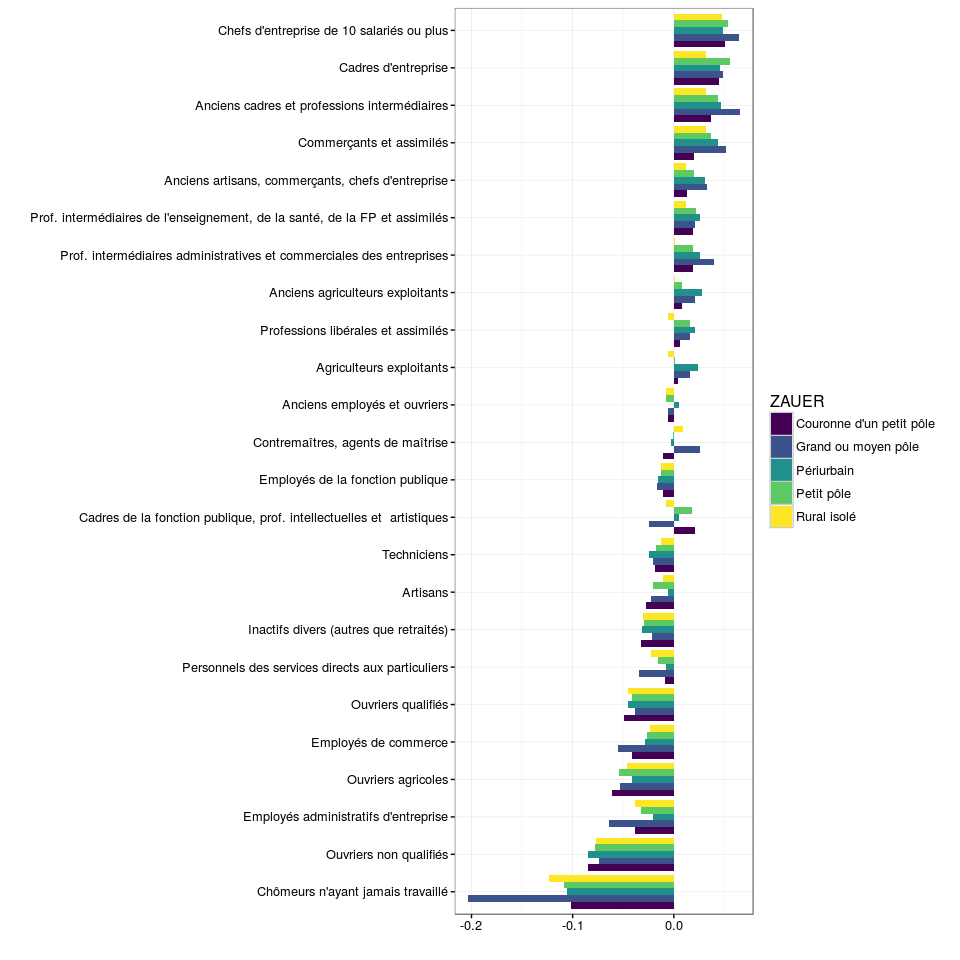

frama.link/fsu
Un niveau en nette augmentation
Un niveau en nette augmentation

Une structure géographique stable
Une structure géographique stable

Un rééquilibrage géographique ?

Un rééquilibrage géographique ?

Une dimension centre-périphérie pas déterminante

La géographie des inégalités

Un, deux, trois électorats FN ?

Et aux régionales ?

Et aux régionales ?

Et aux régionales ?

Merci !